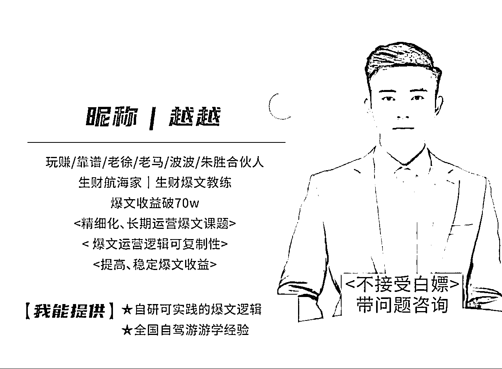
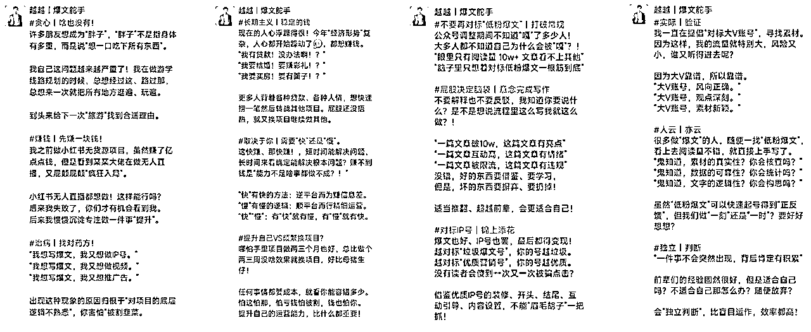
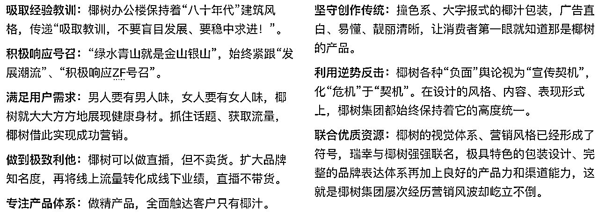
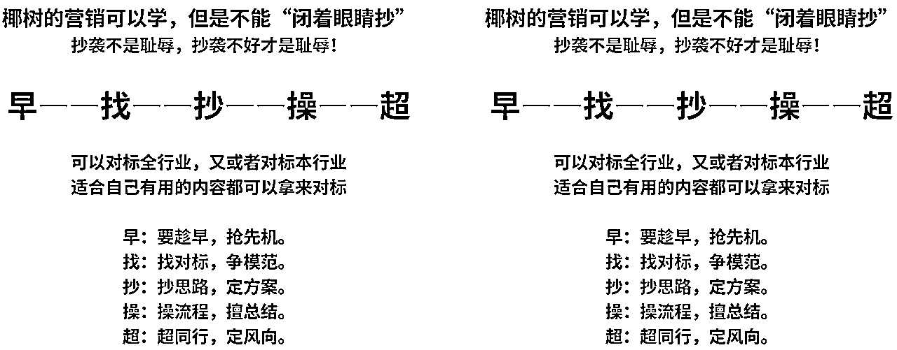
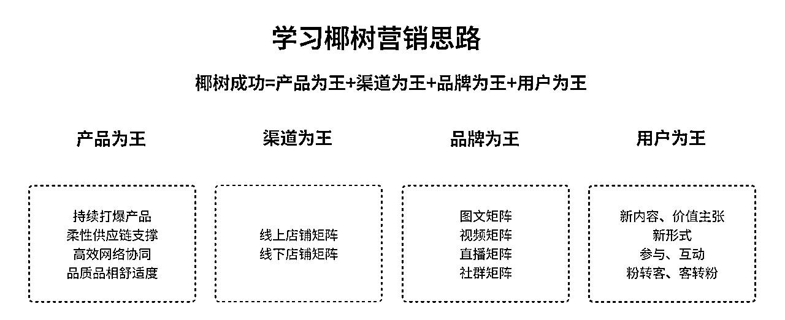
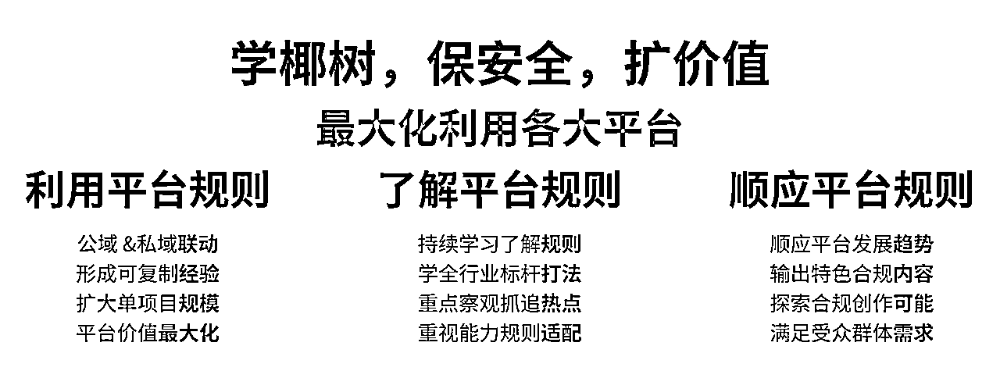
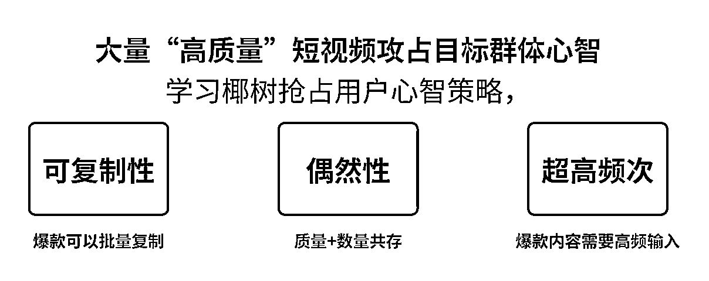

来源：https://txt6wm3b04b.feishu.cn/docx/NsZAdIqKvoUbUBxbcn8cFHognds
本文为《专辑》中的后半卷，主要内容包含：
《专辑》前半卷链接地址：
该《专辑》仍在持续更新中，欢迎各位看官关注越越，以获取最新的更新资料。
文章引用：文章中部分内容来源于《答疑文档》、《平台公开资料》、《线下聚会交流复盘》

将“爆文逻辑”进行总结分析，整理成“可复制、可扩大、可复利”的项目实践理论，
将“爆文逻辑”应用迁移到其他项目中，增加变现效率，减少新试错成本。
副业人入驻新项目，都需要重新学习“新知识”和重复旧动作，到头来发现“很多操作都是重复无用”。
其中会发现其实很多流程、逻辑项目之间都是相通，只是项目细节、目标人群、平台渠道等要素不同。
每个人对待项目的态度、手法都是不同，那么就容易出现两种极端：
“权衡这好两种极端”是一件难事，也是大多数人放弃项目的主要原因：
通俗讲有的人太过于认真；有的人过于轻视，最后落个“人仰马翻”。

这篇文章的效果因人而异！这篇文章基于我在爆文项目中的实操经验汇总而成。这篇文章中提到的方法论不适合心急赚钱的人，但是我相信文章内容可以解决大部分人的问题。
资料显示椰树去年全年销售总额达到50亿元；全年总销量70万吨增长10.26%；上缴税金6.82亿元，增长15.39%。
看起来不华丽，看起来很土，但是看到销售业绩，看上去没就有什么不能理解的地方了。
人家升维、椰树降维。椰树通过一系列花里胡哨操作，维持了【低人设】优势，把自己品牌降维打击，把整个行业的天花板给堵死，然后利用原材料和供应链优势干死所有竞争对手。
品类=品牌？！行业领军品牌把自己的利润率打低、售价打低，从而让所有后面的人没法玩，从而吃掉这个品类大部分的销量，但是薄利多销。品牌降维、封死利润天花板，用供应链优势+规模效应+品牌直接干死竞争对手。

普通副业人想入局“项目”变现的人不在少数 ，往往又面临着几个非常突出、实际的问题。
据我所知许多入局“项目”的新人，很多是被“可爱的收益图”所吸引，于是就下定决心干。
下面就拿“公众号爆文”项目举例分析：
第一，平台项目趋于稳定，平台红利减少。
就像TX的流量主项目只要还在运营，那么爆文项目仍然能够继续盈利，平台“睁一只眼闭一只眼”，用户赚到了很高收益。“很多人之前听说爆文项目贼赚钱，随便发一篇文章就能赚钱”，以前的确是这样，现在还是这样吗？
第二，平台项目无序发展，平台监管“严格”。
之前有些人抓住风口不管三七二十一先赚平台一笔钱，而采取的技术手段往往又违反平台规范。导致优质原创文章被搬运、抄袭、洗稿，出现造谣、煽动等违法行为，平台不得不趋于严格管理。
第三、平台项目收益不稳定，转型特别困难。
看到别人赚钱、自己没赚钱，有些人的心就不稳定了。追着问人家“什么领域”，恨不得马上就转型这个领域。
“每天收入起伏不定，过山车般惊险”，想转型其他领域呢？自己的判断力和定力又缺乏，一看自己都是问题。
你只顾着闷头干，自己都没发现问题出在哪里，问题一直反反复复出现。你发现了问题，但是你又奈何呢？
上面三个瓶颈你还没遇到，你不用着急，你迟早会遇到！我能做的就是把自己的经验“一五一十”的交给你！
过硬技能、缜密思维、稀缺资源是与特定的某个平台、领域、项目强绑定。假设有一天平台迭代了、领域被打击了、项目被关停了，那么你还能继续吃香吗？你不得不换其他平台、其他领域、其他项目，然后又得重新从头开始？！
每个“网赚项目”背后都是一套完整的运营逻辑，这些逻辑可以在项目之中相互使用，掌握了才能获得“主动权”。
所以要想真正获得副业自由和底气，一定要同时尽量做到以下三件事情：
做项目中途放弃的人，放弃原因主要因为：
投入成本>收益回报
你花了时间、精力、金钱，却得不到期望中的回报，时间久了，你就放弃了，你的成就就“付诸东流”。
好好想想下面这个问题，想清楚了，你才能知道你的想法：
这些问题的答案决定你的心态，且影响权重极大。
下面这些技巧可以有效纠正你的心态问题，有问题就治病，没问题就预防，就拿我擅长的“爆文项目”举例分析：
这些规律需要你在平时认真积累、整理，没人有义务主动“一五一十”告诉你，你可以带着合适问题请教靠谱的前辈，什么是“合适的问题”后面会讲。
别看别人的收益图，只是他们想让你看到。看别人的收益图，你会越来越焦虑！
你自己的“几分钱”收益 VS 别人几千收益，看看你心里难受不？
闭上自己的眼睛、捂住自己的耳朵，去了解这个行业平均水平，你可以在平均水平基础上降低期望。
“参与”等于“就能赚钱”？、“赚钱开心、亏损崩溃”，既然有收益那么就有风险，别一上来啥都不懂就干！
你就需要详细了解风险和收益，对于其他项目来说也是一样都是可以“从平台规范里找到”。
项目中常见的风险类型：违规删文、限制能力、没收收益、账号封禁等风险。
项目中常见的收益类型：流量主收益、互选广告收益、私域引流等收益途径。
不要总想着“运气原因”，而要看“哪里异常？为什么异常？”，别找借口，有时间就去认真复盘。
掌握账号资源，基本就可以持续获利：
获取到一手、独特、热门的素材！抢占风口、狂吃流量，但是容易陷入以下极端：
官方在社区发布的一些资讯，这些资讯与平台运营、规则规范相关。一些人了解、你还不了解，这就形成“信息差”。
风向掌握在“权威人士”手上，权威人士往往会把控“项目风向”，以便指哪打哪，掌控全局。
“积极上升”褒义词，是一个又好又大的目标，想想看你在副业中：
副业人应该更加注重“上升空间建设”，让自己感觉到有积极上升的趋势，你就会产生一种比收益更重要的精气神！
篇幅有限，不能详述。总之，你要积极多做“对你自己、他人有利的事”。

“慢就是快”，每个动作做得精致点、重复做的概率就低点。如何做？你得好好看看自己。
抓住人性：明确我是谁？我能做什么？我该怎么做？我以后怎么做？
“我是谁？”，大多数人都不知道“自己，是谁？”，这里所说的“我是谁？”是指“我在项目中是什么角色？”
假设在做项目过程中会出现下列几类人设：
大部分人是这类人，稳稳当当、平安顺遂。大家在项目变现上需要有自己思考，增加自己的独立思考和判断最重要。
循陈规的“大老实人”：懂操守、守本份，只愿意在自己“一亩三分地上耕作”，不逾越“行业旧规”半步。

你坚持下去的动力是什么？能为实现客户提供什么价值？
你自己的兴趣爱好、职业技能、生活习惯等都会影响到你“坚持这个项目的周期时长和变现效率”。
你的兴趣爱好是什么？你的时间投入怎么样？你的职业相关性怎样？你的领域认知怎么样？
上面这个问题不复杂、不多余，想清楚了你才能持续做下去：假设你喜欢阅读，你就进军“书评”。
总之，你得抓住你自己擅长的点，能够让自己有坚持下去的动力且运作起来你能感到舒适。
选择“合适的期望值”，能避免你过于焦虑。
查找、整理、阅读相关平台的规范文件，仔细研究，你会少走不少路，尤其是在项目实操方面。

查找项目操作手册，学习该项目操作方法、经验，但是得先学会自己“发现问题、分析问题”，才能针对解决问题。

在做过程中积累的经验”进行复制放大、再总结，才能把项目做得更大、更强。
明确哪些因素是偶然因素，失败后要血淋淋地解剖自己，不留任何情面总结自己不足。你的能力自然会不断提高。
可以采取“有温度”的对话模式提问复盘：
也可以采取向“有经验、靠谱的前辈”咨询问题的形式进行复盘，问题应该具备以下要素：
提问模板：
角色+问题发生时间+背景细节+问题的影响+解决问题后的预期值+可能因素假设+证据举证+......
举例说明：
谁（角色）+在什么时间（问题发生时间）+做了什么动作（背景细节）+产生了什么样效果（问题的影响）+想得到什么帮助（解决问题后的预期值）+可能是***原因（假设）+证据举证（文章链接）......
抓住“失败教训”，减少“不必要试错成本”；运用“成功经验”，增加“保障成功的机遇”，将经验迁移到其他项目。
对比项目之间的差异点；对比项目之间的共同点；提取特征点、相互融合；再反馈、再调整、复盘。
引发用户愧疚、打击用户自信、剥夺用户成就、弱化用户价值、赞美捧杀用户